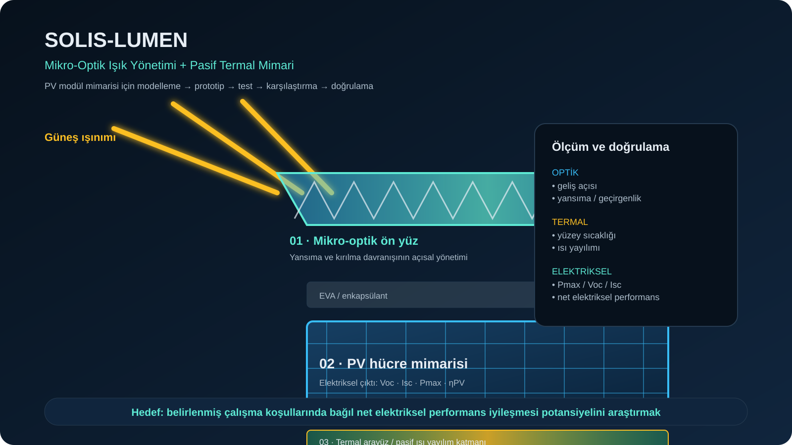

01 · Mikro-optik yüzey
Farklı mikroprizma, piramidal ve mikro-oluk geometrilerinin farklı geliş açılarındaki davranışını optik simülasyon ve laboratuvar ölçümleriyle karakterize etme.
Vitavolt Research · PV Ar-Ge
Mikro-Optik Işık Yönetimi + Pasif Termal Mimari

SOLIS-LUMEN LinkedIn Ar-Ge paylaşımı →Modülün ön yüzündeki ışığın yansıma ve kırılma davranışını mikro-optik yapılarla yönetirken, hücrede oluşan ısının pasif olarak daha etkin dağılması sağlanabilir mi? Bu iki konu arasında sinerji yaratabileceğimiz tasarım uzayı nedir?
Farklı mikroprizma, piramidal ve mikro-oluk geometrilerinin farklı geliş açılarındaki davranışını optik simülasyon ve laboratuvar ölçümleriyle karakterize etme.
Kapillar, mikro-kanal ve porlu yapılar aracılığıyla ısı dağılımı; enerji taşıyıcı akışkanlar ile entegrasyon potansiyeli.
Mikro-optik ön yüzün pasif termal mimariye mekanik olarak uyumlu hale getirilmesi ve modüle entegrasyon öncesi performans taraması.
Geliş açısı, yansıma, geçirgenlik, spektral davranış ve ışınım dağılımı.
Yüzey sıcaklığı, ısı akısı, termal iletkenlik ve dağılım homojenliği.
Açık devre gerilimi, kısa devre akımı, doldurma faktörü ve verim.
Projenin prototip geliştirme, optik/termal karakterizasyon, PV üretimi, test ve ilerleyen aşamalarda ölçeklenebilirliği için sektör ortakları, araştırma kurumları ve yatırımcılardan işbirliği teklifleri açıktır.